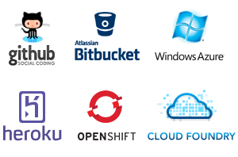
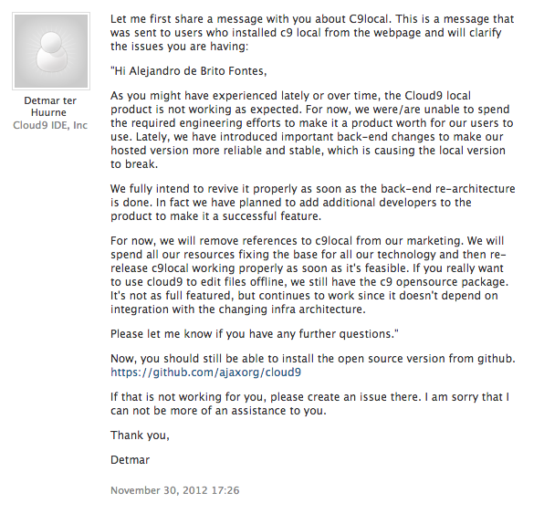

¿Que cubre esta presentación?
- Javascript IDE
- Debug node.js
- Monitoreo
¿Se necesita un IDE?
¿Alternativas?
- vim?
- emacs?
- ¿Sublime Text?
- ....

Cloud9
- Empresa fundada en 2010
- Proyecto Cloud9Ide es opensource
- Diferentes versiones
Versiones
- Online
- Local (checkout desde github)
- Local Nativo
La versión en Github no tiene toda la funcionalidad
Features
- platforma para JavaScript, Node.js, Ruby, PHP y Python
- soporte de sintaxis para HTML, CSS
- 37 lenguajes
Features
- git
- FTP
- SSH
Integración
Online
DEMO
Instalación local
¿Que se requiere?
- NodeJS >= 0.6.16
- NPM >= 1.1.16
Se require el modulo sourcemint (instalado de forma global)
npm install -g sm¿Como se instala?
git clone https://github.com/ajaxorg/cloud9.git cloud9
cd cloud9
sm install
DEMO
Cloud9Local
¿Qué le falta?
"links" en requires :P¿debug?
¿debug?
- Interactuar con el flujo de ejecución
- Modificar valor de variables
- Breakpoints
- Expresiones
node-inspector
npm install -g node-inspectornode-inspector
node --debug script.jsnode --debug-brk script.jsnode-inspector
Si la aplicación esta corriendokill -s USR1 2345DEMO
Monitoreo

@dshaw - RealTimeConf
Opciones
- nodetime
- nodefly
- look
- Joyent - SmartOS
- New Relic (aun no)
nodetime
- Metricas
- Monitoreo de bases de datos
- CPU Profiling
- Memory Profiling
DEMO
nodefly
- Alternativa a nodetime
- Aun en beta (inestable)
- Provee información del event loop
DEMO
look
- Basado en nodetime
- Servidor local
- La interfaz web es distinta
- No tiene persistencia
DEMO
Inconvenientes
- Se necesita declarar un modulo al inicio
- No es posible iniciar en runtime
- memory overhead
- stacktrace
- seguridad
- persistencia (historia)